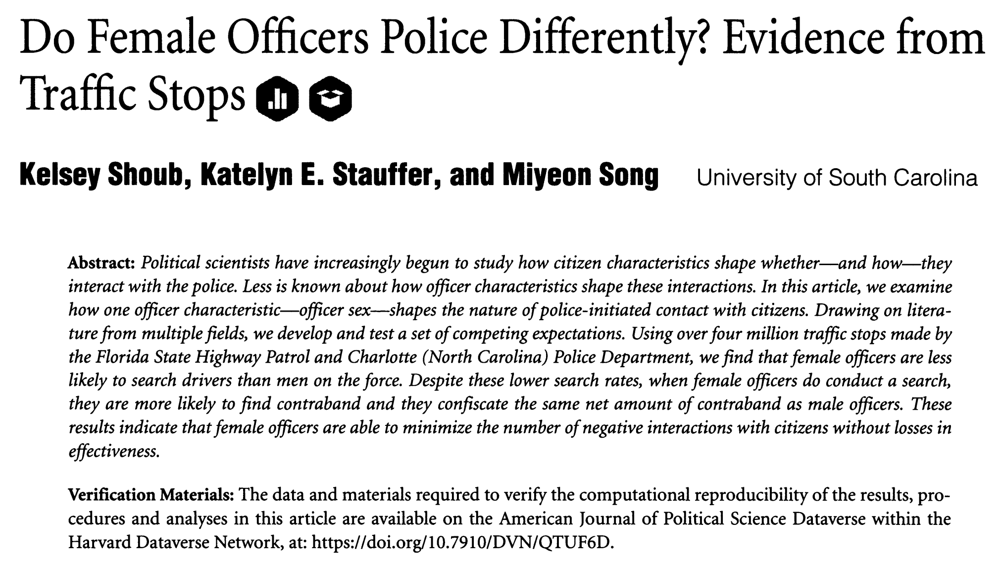

Subsetting data
Week 2 reference
This page covers how to pull out part of a dataset in R, using subset() and boolean operators. Read it from top to bottom. Every code block runs in your browser, so you can press Run Code to see the output, or edit a block and run it again to try a change.
Today’s dataset

We work with officerdata, a record of traffic stops. Read it in:
NoteWhat the columns mean
search_occur— whether a search was conducted at the stopcontra— whether contraband was found at the stopdriver_age— the driver’s age, in yearsdriver_race— the driver’s race (white,poc)officer_female— the officer’s gender, a binary indicator (1= female)
What subsetting is
Often you want only part of a dataset: say, only the stops made by female officers. For that you subset the data. The pattern is:
new.subset <- subset(original.dataset, variable == accepted.value)
- If the variable holds text, wrap the value in quotes:
== 'accepted.value'. - Note the double equals,
==. It is a boolean operator, not an assignment.
Boolean operators
Tests that return a TRUE or FALSE value
|
|
==
|
is equal to |
< and >
|
is less than/greater than |
<= and >=
|
is less than/greater than or equal to |
!=
|
is not equal to |
| Combining boolean operations | |
&
|
and |
| (bar)
|
or |
A first example: the Belcher family
Here is a smaller dataset, belchers:
To keep only the Belchers aged 18 and up, subset on the age column with >=:
adult.belchers is a new dataset of its own. You can do anything to it that you could do to belchers.
To keep only the Belchers who are students, subset on the text value Student. Because the value is text, it goes in quotes:
A more serious example: stops by female officers
Back to officerdata. Because officer_female is a binary indicator, the female officers are the rows where it equals 1:
Subsetting on more than one variable
You can subset on several conditions at once by joining them with a boolean operator. Here are the stops by female officers in which a search took place, using & for “and”:
Using mean() within a subset
Subsetting and mean() together let you compare groups. Here is the rate of contraband found in searches conducted by female officers:
And the same rate for searches by non-female officers, the rows where officer_female equals 0:
Comparing the two numbers tells you whether searches by one group turned up contraband more often than searches by the other.
Skills covered
head()shows the first six rows of a dataset.subset()extracts a portion of the data based on the value of one or more variables.- Boolean operators like
==,>=, and&are how you state the values you want. mean()gives the average of a numeric variable (review from last time).